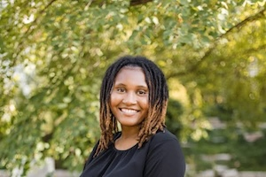

Areyana Proctor is a PhD student in Communication Arts (Media and Cultural Studies)
I am originally from Denver, Colorado. I received my BA in Journalism and Critical Media Practices from the University of Colorado, Boulder. I also have an MA in Communication Arts from the University of Wisconsin-Madison.
I am interested in doing research that explores how Black people use and produce media using digital technologies, especially as a form of representation and political contestation.
Some of my hobbies include reading, writing (although I don't really do this for fun anymore), playing the sims, watching tv, movies, and YouTube, and doomscrolling on social media. I hope to get into my analog hobbies like crocheting and scrapbook journaling, but I think that will have to be a post-work endeavor.